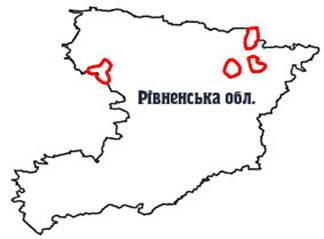

Рівненський природний заповідник.

Розташування: Рівненська область, Володимирецький, Дубровицький, Рокитнівський та Сарненський райони
Площа: 42288,7 га
Підпорядкування: Державний комітет лісового господарства України
Поштова адреса: 34500, Рівненська обл., м. Сарни, вул. Гоголя, 34.

Рівненський природний заповідник було створено Указом Президента України від 3 квітня 1999 року № 356 на площі 47046,8 га, проте згідно з постановою Кабінету Міністрів України від 14 серпня 2003 року № 1271 заповіднику було передано у постійне користування земельну ділянку площею 42288,7 га.Територія заповідника складається з чотирьох окремих ділянок, які з 1984 року мали статус заказників загальнодержавного значення: ландшафтний заказник "Білоозерський" (Володимирецький р-н), загальнозоологічний - "Перебродівський" (Дубровицький та Рокитнівський р-ни), ботанічний - "Сира Погоня" (Рокитнівський р-н), гідрологічний - "Сомино" (Сарненський р-н). Це найбільші за площею і найкраще збережені болотні масиви України, взяті під охорону. Значну роль у їх вивченні та розробці рекомендацій щодо охорони відіграли українські болотознавці на чолі з професором Є.М.Брадісом та вчені-орнітологи.
Заповідник створено з метою збереження у природному стані типових та унікальних природних комплексів Українського Полісся.
В установі працюють 206 чоловік, з них у науковому підрозділі - 6, у службі охорони- 69 осіб.
Згідно з фізико-географічним районуванням України територія заповідника належить до Волинського Полісся Зони мішаних лісів. Вона добре виражає основні риси ландшафту, притаманні цій частині України, - рівнинність рельєфу, переважання пісків, позитивний баланс вологи, високі залісненість та заболоченість. Білоозерський масив заповідника входить до Верхньоприп'ятьського фізико-географічного району, в якому багато озер як карстового, так і заплавного походження. Близько 10 % площі району займають болота. Масиви "Сомино", "Сира Погоня" та "Переброди" належать до Нижньогоринського фізико-географічного району. Ця територія є найбільш заболоченою частиною Українського Полісся. Болота тут займають близько 20% площі.
Клімат району розташування заповідника порівняно вологий і теплий. Сума річних опадів становить 550-600 мм, період активної вегетації 150-155 днів. Це зона достатнього зволоження з середньою температурою липня +18,5°С, січня - -5,5°С і середньорічною температурою + 6-7 °С.
За геоморфологічними умовами це низовина, кристалічний фундамент якої залягає на глибині до 200 м і перекритий льодовиковими, водно-льодовиковими та алювіальними відкладами. Серед чотирьох ділянок заповідника морена виявлена лише на Білоозерській. Ґрунти всіх чотирьох ділянок - переважно торфи.
У рослинному покриві території заповідника переважають ліси і болота (відповідно 48,3% та 48,0%). Серед лісів основні площі займають соснові ліси. На багатьох ділянках у деревостані є значна участь берези, проте березово-соснові ліси в соснових масивах трапляються розсіяно. На локальних площах сформувались листяні ліси з участю граба та місцями дуба. Зовсім незначні площі займають ліси формації вільхи чорної.
Болотна рослинність заповідника є дуже своєрідною. В її складі переважають мезотрофні (перехідні) болота, в меншій мірі оліготрофні (верхові). Болота цих двох класів формацій, на яких розвинений сфагновий покрив, складають близько 80% всіх боліт заповідника. Евтрофні (низинні) болота займають 10-15% площ боліт заповідника (решту складають болота проміжної за живленням групи- олігомезотрофні та еумезотрофні).
Характерною ознакою Рівненського заповідника є те, що в ньому представлені болота всіх типів, які є на Українському Поліссі. Найбільшою різноманітністю боліт визначається Білоозерська ділянка. Саме на ній добре представлені болота з багатим живленням - низинні (евтрофні). На решті ділянок переважають сфагнові болота: ті, що досягли високого ступеня розвитку - верхові (оліготрофні) та менш розвинені - перехідні (мезотрофні).
Кожна ділянка заповідника має свої особливості щодо природних умов та рослинного і тваринного світів.
"Переброди" - обводнений болотний масив, через що і дістав свою назву. Він має рідкісний для України хід розвитку - периферійно-оліготрофний, тобто розвиток болота, наростання шару торфу, збіднення живлення тут відбуваються від периферії до центру. По периферії переважають перехідні угруповання осоково-сфагнових боліт, де ростуть рідкісні види флори України (шейхцерія болотна, росичка проміжна, верба чорнична, занесені до Червоної книги України) та рідкісні види осок - багнова, тонкокореневищна. Рідкісні для нашої країни осоково-шейхцерієво-сфагнові угруповання, що зростають в урочищі Корогод, занесено до Зеленої книги України.
У центральній, найбільш обводненій частині болотного масиву, зосереджені низинні болота. Тут переважають очерет та осока омська. Звичними є такі болотні види як смовдь болотяна, вербозілля звичайне, куничник сіруватий.
Лісова рослинність на ділянці Переброди розміщується на невеликих мінеральних острівцях та гривах. Це переважно соснові ліси вересові, зеленомохові з чорницею, брусницею, орляком. Росте в них рідкісний вид плаунових - дифизіаструм Зейлера, плямами виділяються ділянки північного виду - цінної лікарської рослини мучниці.
Масив Переброди у 2004 році віднесено до водно-болотних угідь міжнародного значення.
"Сира Погоня" - єдиний болотний масив в Україні з горбисто-мочажинним природним комплексом, характерним для північних боліт. На ньому переважають верхові болотні угруповання, занесені до Зеленої книги України. Горби мають округло-витягнуту форму і вкриті пригніченою сосною на сфагновому покриві. Тут ростуть нечисленні види рослин, які можуть витримати ці скрутні умови бідного мінерального живлення та високої кислотності. На горбах поряд з комахоїдною рослиною - росичкою круглолистою - росте рідкісний вид, занесений до Червоної книги України - журавлина дрібноплода.
Обводнені мочажини щільно затягнуті сфагновими мохами - здебільшого сфагнумом загостреним. На сфагновому покриві переважають шейхцерія болотна, осока багнова, зростають такі північні болотні рослини, як бобівник трилистий, образки болотні.
Ділянка "Сомино" за характером рослинного покриву має основні риси Західного Полісся. Це велика ділянка перехідних боліт, збережена в природному стані. Вона є крайньою південно-західною частиною болотного масиву Кремінне, розташованого в межиріччі річок Леви та Ствиги. Перехідне болото на цій ділянці переривається смугами суходолів та прилеглих лісових боліт. Тут розташоване озеро Сомино - типове озеро для Західного Полісся. Озеро ерозійно-карстового походження, його площа становить 56 га, максимальна глибина - 13 м.
На ділянці Сомино переважають осоково-сфагнові болота, трапляються ділянки очеретяно-осоково-сфагнових боліт. Тут росте багато рідкісних болотних видів рослин: росичка проміжна, шолудивник королівський, лікоподієла заплавна, ситник бульбастий, верба чорнична, хамарбія болотна, поширені реліктові види - верба лапландська, осока тонкокореневищна. Масив Сомине - одна з найбагатших у флористичному відношенні ділянок заповідника.
"Білоозерська" ділянка відзначається різноманіттям болотних комплексів.
У долині річки Березини виявлена майже вся гамма болотних рослинних угруповань Українського Полісся - від осоково-гіпнових до осоково-сфагнових. Підвищені елементи рельєфу займають соснові ліси зеленомохові та чорницеві, ще вищі - лишайникові, а знижені - заболочені ліси з багном болотним та молінією.
На території Білоозерського масиву знаходиться озеро Біле карстового походження. Це одне з найбільших озер в Рівненській області. Його площа становить 453 га, середня глибина - 4 м, максимальна глибина - 26 м. Вода його чиста й прозора, на дні добре видно майже біле вапнякове каміння, яке і дало озеру таку назву. По його берегах негустими смугами ростуть очерет і куга озерна, подекуди на воді трапляються ділянки з лататтям білим.
Загалом на території заповідника зберігаються ділянки, на яких представлені 10 рослинних угруповань, занесених до Зеленої книги України.
Кількість видів судинних рослин у Рівненському заповіднику за попередніми даними становить 563 види. Флора нижчих рослин на сьогодні вивчена недостатньо: поки що відмічено наявність 20 видів мохоподібних, 26 видів лишайників. На території заповідника зареєстровано 101 вид грибів.
У складі флори заповідника зустрічається 28 рідкісних видів, занесених до Червоної книги України. Крім них, тут росте кілька дуже рідкісних видів, які потребують занесення до Червоної книги України. Це осоки дводомна, тонкокореневищна, торфова, верба лапландська. Із рослин, що зростають у заповіднику, 2 види занесено до Європейського червоного списку, 1 вид - до Додатку 1 Бернської конвенції, 28 видів віднесені до списку регіонально рідкісних видів.
Фауна заповідника представлена типовими для Полісся комплексами тварин. Тут мешкає 26 видів ссавців, найбільш численною групою серед яких є гризуни. Поширені також хижаки - лисиця звичайна, вовк, єнотовидний собака, ласка, горностай та ін. На особливу увагу заслуговує рись, що трапляється на ділянці Переброди.
Із 165 видів представлених тут птахів переважають види деревно-чагарникового комплексу. Характерною є наявність північних, тайгових видів - тетерева, рябчика, зрідка - глухаря. На болотах гніздяться журавель сірий, кроншнеп великий. Дуже характерним є лісовий кулик вальдшнеп, який в інших районах Полісся трапляється рідко. На озерах Біле та Сомино мешкає лебідь-шипун, у глухих хвойних лісах, що межують з болотами, - лелека чорний. Досить поширені хижі птахи - боривітер звичайний, чеглок, кібчик, лунь болотяний, канюк звичайний, яструби.
На території заповідника нараховується 7 видів плазунів та 8 видів земноводних. Тут поширені гадюка, вуж звичайний, мідянка, веретільниця ламка, ящірки живородна та прудка, черепаха болотна, тритон гребінчастий. Риби у водоймах заповідника представлені 15 видами. В озері Біле мешкає вугор, сом та інші типові для Полісся види. Загалом фауна хребетних заповідника нараховує 221 вид тварин.
До Червоної книги України занесено 25 видів тварин: із ссавців - кутора мала, заєць білий, норка європейська, борсук, видра річкова, горностай, рись звичайна, зубр; із птахів - підорлик малий, підорлик великий, орлан-білохвіст, скопа, сапсан, змієїд, глухар, журавель сірий, пугач, сова бородата, лелека чорний, сорокопуд сірий, очеретянка прудка і ін. До Європейського червоного списку відноситься 7 видів, серед них, крім "чевонокнижних", тут відмічено вовка, вовчка ліщинового, деркача. В межах заповідника мешкають представники 124 видів тварин, що підлягають особливій охороні згідно з Бернською конвенцією, 15 видів, віднесених до "червоного" списку Міжнародного союзу охорони природи (МСОП), 29 видів вважаються регіонально рідкісними. Фауна заповідника потребує подальшого вивчення.